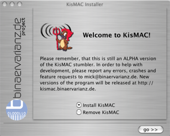
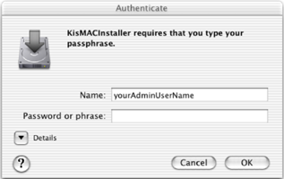

| KisMAC Manual - Installation |
KisMAC uses its own, more powerful installation program similar to the Apple supplied installer application. To begin the installation, double click KisMACInstaller icon in the Finder and follow the prompts.
- Clicking on the Go button will start the installation process

The KisMAC installer can be used to either install or remove KisMAC.
Removing KisMAC is covered in another chapter.
- If you have previously installed the Sourceforge Wireless Driver for a third party wireless card,
the KisMAC installer will now ask whether you want to install a patch for this driver. If you do
not have this driver installed, this dialog will be skipped and you can proceed with the next step.
The Sourceforge Wireless Driver has a bug, which disallows KisMAC to unload and reload the driver at run-time. If you choose to patch it, the Installer will also install a utility which allows you to change the MAC address of your Prism II or Orinoco card.
Installing a new driver is always a bit risky. If there should be problems, you can always boot your system by holding the SHIFT key at startup and remove KisMAC.
Please remember to reinstall KisMAC, if you install the Sourceforge Wireless Drivers later on.
- Next will be the General Public License agreement, after reading the license, click go again.
- The installer will now ask for your admin password. You must be an admin user to install KisMAC.

- Once you click okay in the password dialogue, the installer will immediately search for older versions
of KisMAC and remove any it finds before proceeding. It will then place the KisMAC application in your
Applications folder along with the KisMAC Driver Tool. The installer also places alternative wireless
card drivers used by KisMAC in the required place on your System drive. (A complete list of files
installed can be found at the end of this chapter)
- You are now ready to begin using KisMAC. Start by double clicking the KisMAC icon in the Finder.
Note: Sometimes it takes a minute until the Finder refreshes the Application Folder under systems prior to 10.4.
Basic Installation:
- /Applications/KisMAC.app
- /Applications/KisMAC Driver Tool.app
- /System/Library/Extensions/WirelessDriver.kext/bipatch
- /System/Library/Extensions/WirelessDriver.kext/Contents/MacOS/WirelessDriver (old file is renamed to WirelessDriver.old)
- /Applications/WirelessMAC.app
| back | Tell me more |